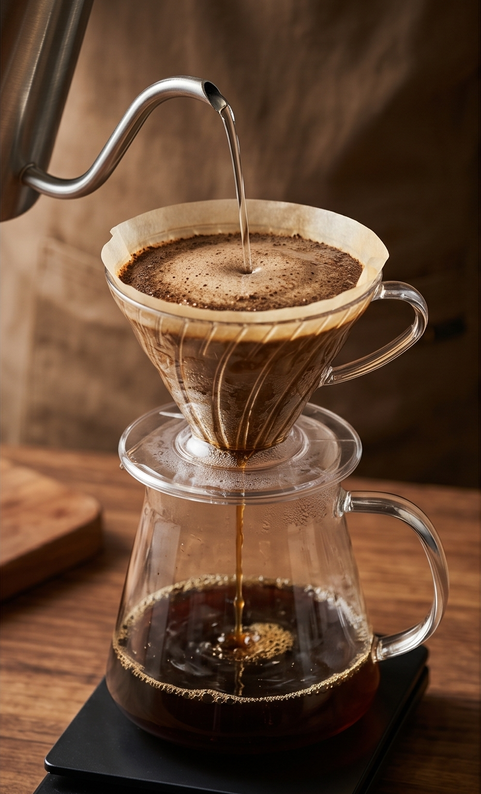
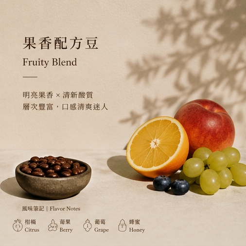
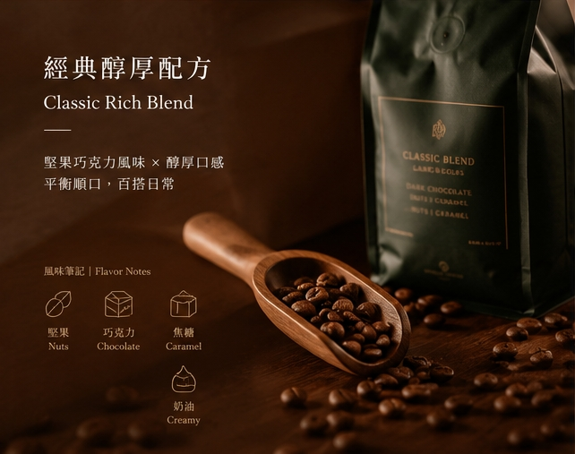
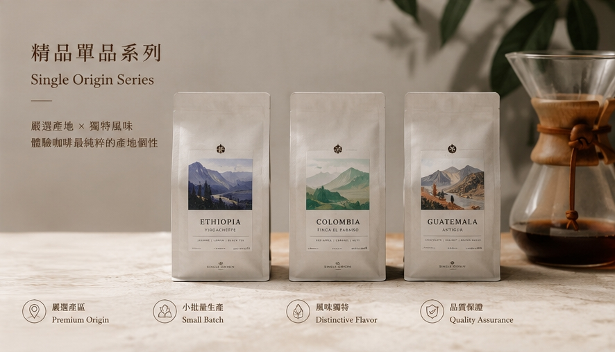

太苦
喝一口就皺眉，糖和奶精加到懷疑人生。
Green Roast Coffee
青焙咖啡堅持自家烘焙咖啡豆，保留自然果香與醇厚口感。 少了苦澀，多了層次，讓不愛喝咖啡的人也能輕鬆愛上。

喝一口就皺眉，糖和奶精加到懷疑人生。
喝完胃不舒服，總覺得身體有負擔。
只有苦味，喝不出大家口中的香氣與層次。
青焙咖啡希望讓更多年輕人發現，原來咖啡可以自然回甘、帶有果香，甚至不加糖也能好喝。
接單後安排新鮮烘焙，保留最佳香氣表現。
精選優質咖啡豆，展現不同產區獨特果香與花香。
降低刺激與苦澀感，即使初次接觸咖啡也容易接受。
無需大量糖分修飾，保留咖啡原始風味與低熱量特性。
清爽明亮，入口帶有自然水果香氣。
豐富層次感，香氣持久而不厚重。
順口不苦澀，每一口都留下舒服餘韻。

適合初學者

適合日常飲用

適合進階玩家
我們發現許多年輕人並不是排斥咖啡，而是被過度苦澀的印象拒於門外。
因此，青焙咖啡專注於自家烘焙，透過不同烘焙曲線調整， 讓咖啡保有自然香氣與平衡口感。
希望每一位第一次喝咖啡的人，都能找到屬於自己的那份喜歡。
以前完全不喝黑咖啡，朋友推薦後試喝，居然有水果香味，完全顛覆我的印象。
不加糖也很好喝，每天上班前都會泡一杯。
包裝很有質感，送朋友也很適合。